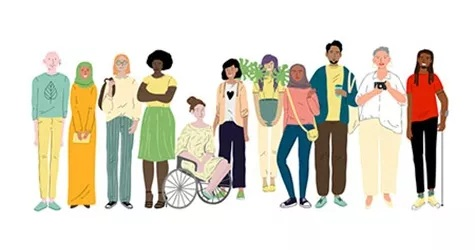
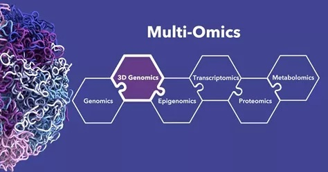

THeLab uses evolutionary thinking to understand complex biological phenomena across the many continuums that characterize natural populations. We integrate population genetics, statistical genetics, artificial intelligence, and multiomic data to investigate how evolutionary forces shape patterns of genetic variation and how those patterns contribute to biological diversity, health, and disease.
What We Do
Evolution and population genetics
Complex evolutionary forces shape patterns of genetic variation.

Ancestry and population diversity
Human populations form a continuum shaped by demographic history and admixture.

Multi-omics and complex traits
Multi-omic data link molecular phenotypes to health, disease, and treatment response.